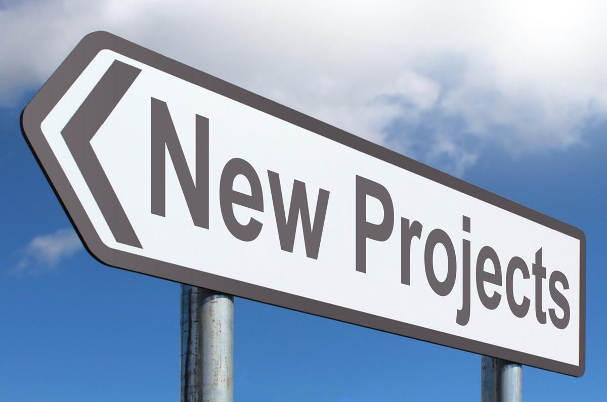
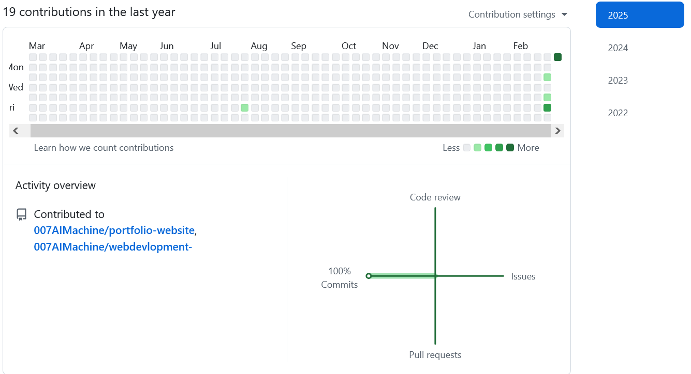

Hi, I'm Ramesh Kumar
a passionate about building clean, efficient websites and
contributing to the open source community. My GitHub is where I
share my coding journey—from developing innovative projects and
collaborating with other developers to exploring new technologies
that make a real impact. When I'm not coding, I enjoy playing
guitar, gardening, and taking nature walks, which all inspire my
creative problem-solving.
My New Project Will Be Here Soon
My GitHub Contributions
20 contributions in the last year